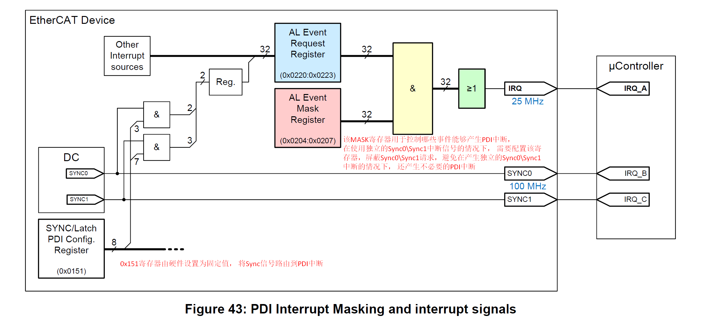
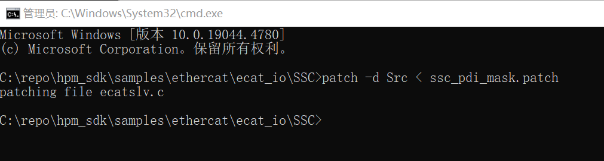
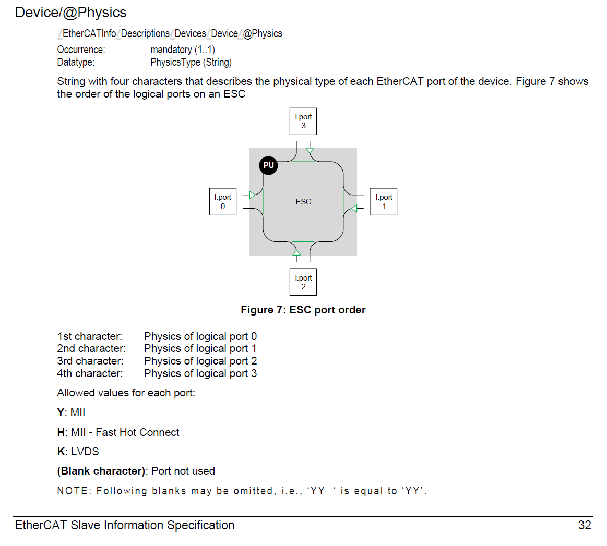
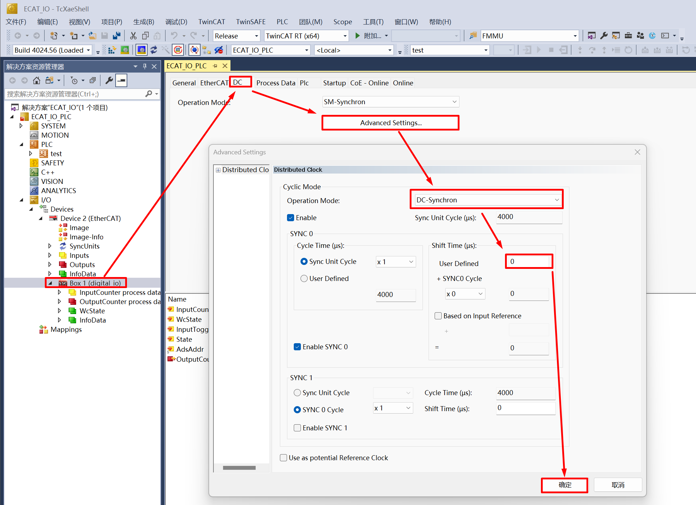
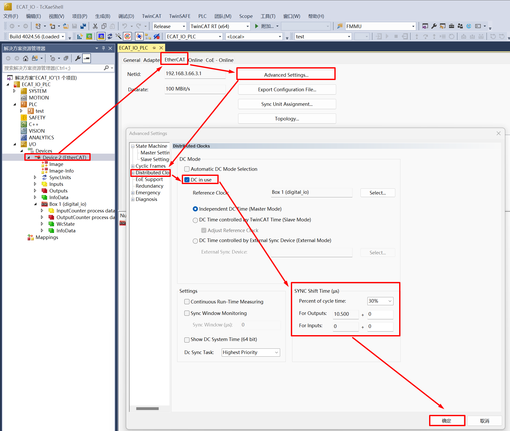

12.3. ECAT_IO
12.3.1. 1. 概述
ECAT_IO示例用于演示使用ESC外设和从站协议栈代码(SSC)实现ECAT数字IO从站的功能。
该例程程序支持对ESC的EEPROM数据进行初始化，能够简化更新ESC的EEPROM的步骤。
如果程序代码中包含由SSC Tool生成的EEPROM数据(eeprom.h), 会检查ESC的EEPROM中存储的数据并根据条件进行更新。
如果EEPROM中的EtherCAT Slave Controller Configuration Area(前8个Word)的数据checksum校验失败，则会使用eeprom.h中的数据初始化EEPROM。
如果EEPROM中的EtherCAT Slave Controller Configuration Area(前8个Word)的数据checksum校验成功，则会进一步校验EEPROM数据中的Product Code和Revision Code。
当Product Code不同或eeprom.h中的Revision Number大于当前已经存储的EEPROM数据的Revision Number时，则会使用eeprom.h中的数据初始化EEPROM。
该方法能够解决初次使用时EEPROM为空情况下checksum校验失败的问题，能够对EEPROM进行初始化。在程序升级阶段，新的程序代码包含的eeprom.h中的Revision Number大于当前已经存储的EEPROM数据的Revision Number时，会使用新程序中的eeprom.h初始化EEPROM，而无需通过主站工具如TwinCAT等去更新EEPROM。
12.3.2. 2. 准备
12.3.2.1. 2.1 硬件
带ECAT的开发板，请参考具体开发板 引脚描述 查看ECAT网口/RUN LED/ERR LED等硬件
带网口的PC
TwinCAT3软件对PC网卡有适配问题, 部分支持的Intel网卡
12.3.2.2. 2.2 软件
TwinCAT3.1(Build 4024.56)
SSC Tool(SSC Version: 5.13; Config File Vers: 1.5.3.0)

12.3.3. 3. 工程设置
12.3.3.1. 3.1 使用Flash模拟EEPROM
默认设置为使用flash模拟eeprom, 无需修改工程设置。
注意 ：使用FLASH模拟EEPROM功能时，需要为FLASH_EEPROM内容分配合适的flash空间， 避免与其他的flash内容产生冲突。
12.3.3.2. 3.2 使用实际EEPROM
如需使用实际的eeprom器件, 请在使用SSC Tool时将”Hardware”属性下的”ESC_EEPROM_EMULATION”和”CREATE_EEPROM_CONTENT”设置为0, 再生成从站协议栈代码。
使用实际eeprom时, 在文件`CMakeLists.txt`中, 设置”set(CONFIG_EEPROM_EMULATION 0)”。
12.3.4. 4. 生成从站协议栈代码
由于许可问题, HPM_SDK不提供EtherCAT从站协议栈代码(SSC), 用户须从倍福官网下载SSC Tool并生成从站协议栈代码。
12.3.4.1. 4.1. 下载SSC Tool
进入 ETG下载网页 , 输入”SSC”过滤下载内容


Note
下载需要提供ETG会员账号和有效的Vendor ID
下载并安装SSC Tool
12.3.4.2. 4.2 SSC Tool中导入配置文件
打开SSC Tool, 选择 Tool->Options

选择Configurations, 选择添加配置文件<hpm_sdk>/samples/ethercat/ecat_io/SSC/Config/HPM_ECAT_IO_Config.xml

12.3.4.3. 4.3 SSC Tool中创建新的工程
点击 File->New

点击 Custom 选项, 并在下拉列表中选择 HPMicro ECAT Digital IO <HPMicro>

保存工程文件, 指定保存路径

导入应用
选择 Tool->Application->Import , 导入文件<hpm_sdk>/samples/ethercat/ecat_io/SSC/digital_io.xlsx


点击 OK

12.3.4.4. 4.4 生成协议栈代码
点击 Project->Create new Slave Files

选择输出路径, 须设置Src输出路径为ecat_io/SSC/Src路径, 或者设置其他路径将生成的生成的Src复制到ecat_io/SSC/Src目录下
点击Start生成从站代码和ESI文件

12.3.4.5. 4.5 SSC协议栈代码修改
ESC IP支持产生独立的Sync0Sync1中断，同时Sync0Sync1请求还可以触发PDI中断，为避免在使用独立的Sync0Sync1中断的情况下，Sync0Sync1请求触发不必要的PDI中断， 需要设置AL Event Mask Register(0x204)进行屏蔽
通过打patch的方式修改SSC代码，在SSC目录下的命令行窗口执行：patch -d Src < ssc_pdi_mask.patch
注意 ：如果你的电脑上没有安装patch命令，你需要安装2.5.9版或更高版本的GNU patch。如果已安装，请跳过此步骤。从 网站 下载patch命令（当前版本为2.5.9），并将”patch.exe”的安装路径添加到系统环境变量中以便能在命令行窗口中执行patch命令。
12.3.5. 5. TwinCAT工程设置
12.3.5.1. 5.1. 添加ESI文件

请根据实际硬件端口数目修改SSC工具生成的ESI文件( ECAT-IO.xml )中的设备的属性(<Device Physics=”YY”>), 默认生成的属性为”YY”，表示实现了Port0和Port1两个端口。如实际实现了Port0, Port1和Port2三个端口，请手动修改属性为”YYY”。
将ESI文件( ECAT-IO.xml )复制到TwinCAT的安装目录下(如: C:/TwinCAT/3.1/Config/Io/EtherCAT )。
12.3.5.2. 5.2 创建工程
打开TwinCAT软件，选择 File->New->Project

选择 TwinCAT Project , 命名后点击 OK

12.3.5.3. 5.3 软件配置
更新网卡驱动(第一次使用时需要)


时钟设置
软件运行时可能遇到如下报错：Init4RTime：Start Interrupt：Ticker started >> AdsWarning4115 （0x1013,RTIME：system clock setup failed）, 需要以管理员权限运行C：TwinCAT3.1Systemwin8settick.bat

12.3.5.4. 5.4 扫描设备
点击Device, 右键Scan

选择对应的网络设备

12.3.5.5. 5.5 更新EEPROM
双击扫描出的设备, 选择 Online , 选择 Box , 右键选择 EEPROM Update 。
对于EEPROM内容为空的情况, 扫描设备时无法查询到匹配的Box, 此时需要更新EEPROM内容。 *
在EEPROM内容为空的情况下, ESC上电加载EEPROM数据时会出现checksum错误, 该错误会造成PDI不工作, 此时EtherCAT通信是可能的, 可以通过主站更新EEPROM内容。 *

选择对应的ESI文件, 点击 OK , 等待更新完成

重新上电评估板, 删除已扫描出的设备重新扫描后, 运行设备


12.3.5.6. 5.6 IO操作
输入IO, 拨动评估板上的拨码SW6, InputCounter数值发生变化

输出IO, 双击OutputCounter, 选择Online, 点击Write写入数值。 评估板LED9和LED3发生变化

LED7为ECAT的RUN_LED, LED6为ECAT的ERROR_LED
12.3.5.7. 5.7 DC设置
设置从站的同步模式，此处可以为从站设置单独的Shift Time(Shift Time用于保证所有的从站都能在DC同步事件到来前收到主站发来的数据)
设置主站的同步模式，通过主站的Sync Shift Time可以设置所有DC同步模式从站的shift time(通常为Sync Unit Cycle时间的20%~30%)， 单个从站的实际Shift Time = 主站设置的Shift Time + 从站设置的Shift Time
点击Restart TwinCAT（Config Mode)，从站可以在DC同步模式下进入OP状态，实际使用中应该在TwinCAT中创建任务(如PLC task或NC Task)，设置从站与主站任务进行同步，激活配置后进入Run Mode，保证同步性能，实现在DC同步模式下工作

12.3.6. 6. 运行现象
当工程正确运行后, 串口终端会输出如下信息：
当需要初始化EEPROM数据时，log如下：
EtherCAT IO sample
Init EEPROM content.
Init EEPROM content successful.
EEPROM loading successful, no checksum error.
当不需初始化EEPROM数据时，log如下：
EtherCAT IO sample
No need to init EEPROM content.
EEPROM loading successful, no checksum error.